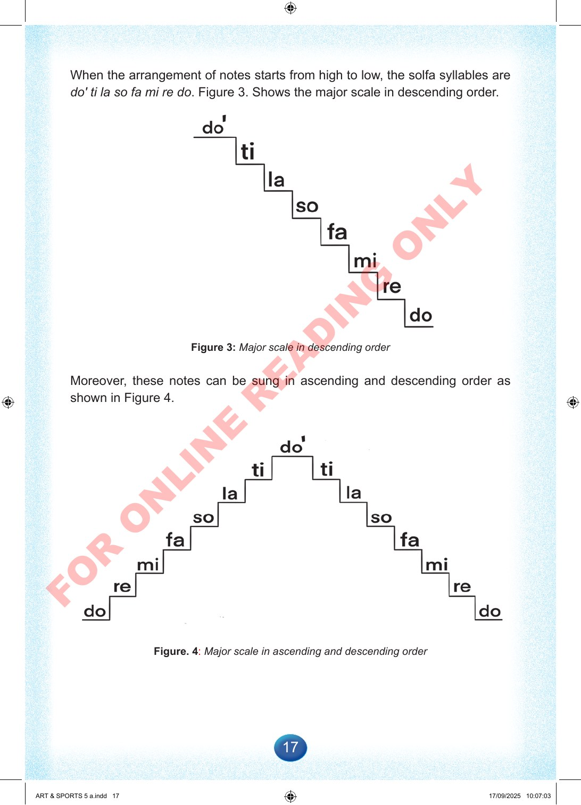

17
When
the
arrangement
of
notes
starts
from
high
to
low,
the
solfa
syllables
are
do'
ti
la
so
fa
mi
re
do.
Figure
3.
Shows
the
major
scale
in
descending
order.
Figure
3:
Major
scale
in
descending
order
Moreover,
these
notes
can
be
sung
in
ascending
and
descending
order
as
shown
in
Figure
4.
Figure.
4:
Major
scale
in
ascending
and
descending
order
ART
&
SPORTS
5
a.indd
17
ART
&
SPORTS
5
a.indd
17
17/09/2025
10:07:03
17/09/2025
10:07:03
F
O
R
O
N
L
I
N
E
R
E
A
D
I
N
G
O
N
L
Y